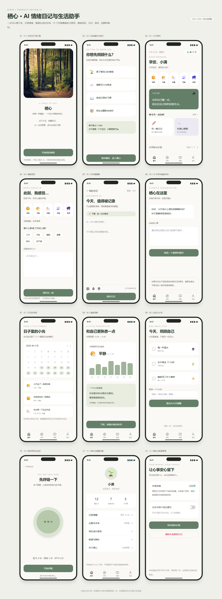

栖心 · AI 情绪日记与生活助手
本轮来源
用户指定 gpt-6.1-sol / max，明确允许当前会话。当前助手顺序执行，无子代理；模型名称来源为用户。完整用户要求与本题原文见 prompt.md。系统完整上下文、前序工具输出和历史缺失的材料未导出，输入标记 partial。
批次说明（文件未留存） · 校验记录（文件未留存） · 校验前首轮完整源码快照（文件未留存）
这是一次当前会话的实现记录，不能视作独立会话下的公平性能评测。没有人工修改，所有实现期修复由当前助手完成。
产品与页面
12 个 375px 原型：欢迎、初始目标、今日首页、情绪签到、日记编辑、AI 引导、日记时间线、情绪洞察、生活计划、呼吸安抚、我的设置、隐私管理。单页展示全部界面，窄屏自动换行，各手机框独立。
Tailwind Play CDN 处理样式，Unsplash 提供摄影，Lucide Static 提供图标。保留任务指定的 canghe_app_prototype.html，并以 index.html 作为规范入口。两个文件内容相同。
交互
情绪选择、目标选择、复选计划、预设引导回复、日记本地保存及清除、呼吸动画。日记仅在当前浏览器 localStorage 保存。时间线、洞察、统计为预设设计数据，未连接 AI、医疗服务、账户同步或系统通知。
运行与复盘
浏览器直接打开任一 HTML，或通过根目录静态服务器访问。CDN、图片和图标需要联网。已检查情绪选择、保存日记、独立原型状态及 390px 无水平溢出。基线未提供真实 AI 服务要求，因此 AI 页面保留明确标注的本地引导示例；隐私页如实说明存储能力。
预览截图

由本 run 登记的最终预览入口在 Chromium 1440 × 1050 桌面视口生成完整页面截图，采用默认初始演示状态。
当前归档信息（自动生成）
- 实验 ID：
life-diary--gpt-6-1-sol-max-r01 - 模型：GPT-6.1 Sol；推理档位：max
- 类型：prototype；预览：static；网络：required
- 完整原始输入快照 · 主题与其他版本
- 输入记录：保存用户原始要求及基线任务正文；当前会话顺序执行。完整系统上下文与前序工具输出未导出，参见 docs/experiments/gpt-6-1-sol-max。
- 工具：Codex。用户指定 gpt-6.1-sol / max；当前会话直接执行，无子代理。Windows，Node 22.16.0，npm 10.9.2；日期按用户环境上下文。
- 运行方式：浏览器直接打开本目录入口；CDN/外部素材需要联网。
- 费用记录：OpenAI · ChatGPT Plus 订阅；单案例货币金额未记录。据用户说明，OpenAI 模型通过 ChatGPT Plus 订阅测试；全部案例完成后，五小时额度未耗尽。未提供单案例费用金额。
- 主页面
- 任务指定原型文件
部署适配记录
- 2026-09-30：从空白基线首次实现；按主题最新提示词执行，未获取历史实现。
- 同时保留任务指定的 canghe_app_prototype.html 和归档规范入口 index.html；AI 对话为显式说明的本地引导示例。
- 2026-09-30：保留任务指定文件名与 index.html；去重初次生成的入口元数据，图表完全使用 Tailwind 类。
- 维护者于 2026-10-22 按 v3 对本轮桌面、手机及补充状态逐图重评并绑定 captures 证据；旧截图和 v2 评分见 catalog/score-reviews/2026-10-21-v3-source.json。未重跑模型或改写实验源码，截图不证明完整功能、算法、手势或性能。